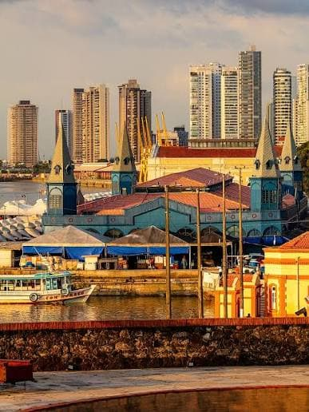

Ângelo César Luz Barbosa
Sobre Mim
Olá! Meu nome é Ângelo Barbosa, sou de Belém-PA, Brasil, sou casado, e tenho 2 filhos. Eu gosto muito de passar tempo em família, assistindo filmes e séries, gosto também de jogos de tabuleiro e viajar. Gosto muito de ler e de praticar esportes, principalmente volei. Sou membro de A Igreja de Jesus Cristo dos Santos dos Últimos Dias desde 1991. Sou estudante da BYU-Pathway no Curso de Bacharelado em Desenvolvimento de Softwares. Já tenho mais de 20 anos de experiência em desenvovimento de softwares, mas ainda não possuo uma formação acadêmica, estou empolgado para aprender mais sobre desenvolvimento web.
Belém-PA, Brasil

Belém, capital do estado de Pará, é uma cidade portuária e a porta de entrada para a região do Baixo Amazonas do Brasil. Junto à Baía do Guajará, o bairro da Cidade Velha à beira-rio preserva a arquitetura colonial portuguesa, das igrejas e casas com azulejos coloridos a uma fortificação do século XVII conhecida como Forte do Castelo. Ver-o-Peso é um amplo mercado ao ar livre junto à água, onde se vende peixe, fruta e artesanato da Amazónia.
Recursos Web Dev